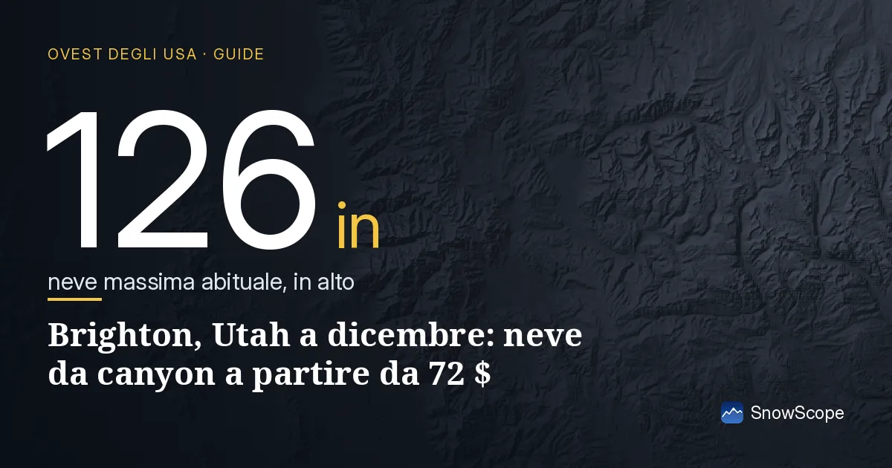
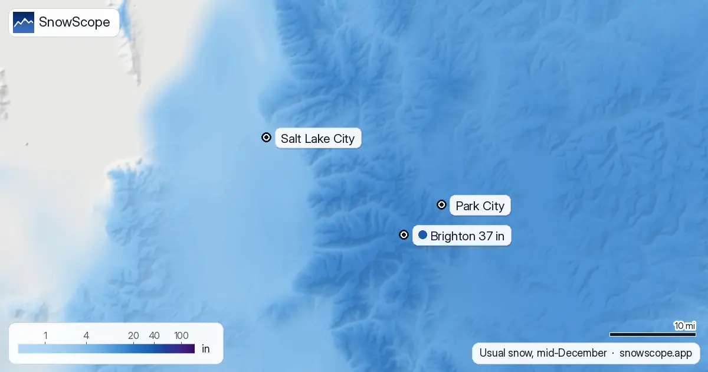

Brighton, Utah a dicembre: neve da canyon a partire da 72 $
Brighton si trova in alto nel Big Cottonwood Canyon, dove l'elevazione della base le dà un vantaggio rispetto alle stazioni sciistiche più basse dello Utah a dicembre. La neve di inizio stagione qui è affidabile al punto che l'89 percento degli inverni passati ha avuto una profondità misurabile a metà mese, e un biglietto giornaliero costa 72 dollari se prenoti in anticipo.
Le previsioni neve in tempo reale per Brighton Resort nell'app SnowScopeAltezza neve, allerte powder e mappa 3D, gratis.
Perché l'altitudine conta a dicembre
La base di Brighton a 2.666 m significa che inizia a raccogliere neve settimane prima delle stazioni sciistiche nelle valli. Per metà ottobre, la neve duratura raggiunge la mezza montagna a 2.925 m. Questo vantaggio iniziale è cruciale: l'1 dicembre, quando i terreni più bassi sono spesso spogli, la mezza montagna qui già contiene circa 70 cm.
La posizione del canyon conta inoltre. L'aria fredda scorre da sopra, e il terreno di cresta a 3.185 m cattura neve che le aree più basse si perdono. Ecco perché il divario di profondità tra base e vetta cresce durante il mese.

Tracciare dicembre settimana per settimana
Il 15 dicembre, la mezza montagna si attesta a 94 cm, con 68 cm alla base e 115 cm in vetta. In quasi 9 inverni su 10 secondo i dati, la mezza montagna aveva almeno 50 cm entro questa data. Anche un dicembre magro—uno su dieci—ha consegnato 52 cm lì.
Nel giorno di Natale il quadro si rafforza. La mezza montagna raggiunge 122 cm, e il 98 percento degli inverni aveva almeno 50 cm. Entro il 31 dicembre la profondità tipica è 133 cm alla mezza montagna, con il 100 percento degli inverni sopra i 50 cm.

Prezzi dei biglietti e quando acquistare
Brighton utilizza prezzi dinamici sui biglietti giornalieri 2026/27. Il prezzo di partenza è 72 dollari, ma solo per i compratori anticipati; le date festive e gli acquisti dell'ultimo minuto costano di più. Il consiglio più chiaro della stazione è semplice: acquista il tuo biglietto online prima della data se vuoi il miglior prezzo.
Per una visita di più giorni, la Go Card ti permette di caricare tre, quattro o cinque pass a giornata intera su una sola carta con fino al 40 percento di sconto rispetto alla tariffa della finestra a giornata intera. Controlla la pagina della stazione sciistica per l'importo esatto in dollari sulle date che scegli, poiché i prezzi cambiano con la domanda.
Come Brighton si confronta con le opzioni vicine
Park City Mountain Resort si trova oltre la cresta ed è famosa per le sue dimensioni, ma la sua storia di neve racconta una storia diversa a dicembre. Il 15 dicembre, la mezza montagna di Park City contiene un tipico 64 cm, e solo il 72 percento degli inverni aveva 50 cm o più. I numeri di Brighton sono più forti alla stessa data.
Beaver Mountain vicino a Logan applica un biglietto per adulti fisso di 75 dollari e ha la mezza montagna a 57 cm in un tipico 15 dicembre, con solo il 57 percento degli inverni sopra i 50 cm. Brighton costa circa lo stesso se catturi un prezzo early-bird, ma offre una profondità di neve più affidabile.
La neve di dicembre è diventata più sottile?
Il lungo registro mostra un cambiamento. Nei primi 15 inverni nel file (1980-81 a 1994-95), la mezza montagna conteneva 128 cm il 15 dicembre tipico, e ogni singolo inverno aveva 50 cm o più. Era quasi perfetto per l'affidabilità.
Negli ultimi 15 inverni (2011-12 a 2025-26), il valore medio è sceso a 68 cm, e solo il 73 percento degli inverni ha raggiunto 50 cm. La scorsa stagione ha dato solo 43 cm in quella data. Dicembre a Brighton è ancora una delle scommesse più sicure di inizio stagione dello Utah, ma non è più la certezza di una volta.
Cosa portare e cosa sapere prima di partire
Big Cottonwood Canyon richiede regole di trazione invernale quando cade la neve. Porta catene in macchina o usa un veicolo a trazione integrale con pneumatici invernali di buona qualità. L'autobus del canyon funziona tutto l'anno e evita completamente il viaggio se questo ti attrae.
Controlla la previsione di due settimane prima di prenotare un viaggio in un dicembre secco. Le piste più basse possono assottigliarsi rapidamente se la neve è leggera. La mezza montagna e oltre rimangono più affidabili, quindi pianifica di trascorrere la tua giornata a elevazioni più alte se la base sembra marginale.
Consigli per sciatori
- Acquista il tuo biglietto giornaliero online diverse settimane in anticipo. I prezzi dinamici premiano gli acquisti anticipati; i biglietti festivi e dell'ultimo minuto costano 20-40 dollari in più.
- Se il budget è stretto, evita l'ultima settimana di dicembre. Quel periodo tipicamente costa di più per biglietto.
- Porta catene di pneumatici o guida con trazione integrale durante le tempeste. Big Cottonwood Canyon applica regole di trazione, oppure prendi l'autobus del canyon per saltare il viaggio.
- Vai a mezza montagna o più in alto se dicembre è stato secco. La base può essere sottile; le elevazioni superiori mantengono meglio la profondità.
- Controlla il bollettino dell'Utah Avalanche Center prima di andare fuori pista.
Su questi numeri
Le altezze neve delle località sono la neve più alta sui pendii superiori alla data indicata; sono stime per un'area, non una misura in un punto. Le previsioni possono cambiare. Leggi sempre il bollettino valanghe ufficiale prima del fuoripista.
Bollettini valanghe ufficiali: Utah Avalanche Center
Cita questo articolo
Per ricerca, didattica o stampa: numeri e grafici sono liberamente riutilizzabili con licenza CC BY 4.0 citando così.
SnowScope (2026), Brighton, Utah a dicembre: neve da canyon a partire da 72 $, https://snowscope.app/blog/it/2026/11/brighton-utah-december-lift-tickets-snow.html, consultato il 2026-11-14
SnowScope (Atlas Labs). (2026, November 14). Brighton, Utah a dicembre: neve da canyon a partire da 72 $. SnowScope snow reports. https://snowscope.app/blog/it/2026/11/brighton-utah-december-lift-tickets-snow.html
BibTeX
@misc{snowscope2026brightonutahdecemberlift,
author = {{SnowScope (Atlas Labs)}},
title = {Brighton, Utah a dicembre: neve da canyon a partire da 72 $},
year = {2026},
month = nov,
howpublished = {\url{https://snowscope.app/blog/it/2026/11/brighton-utah-december-lift-tickets-snow.html}},
note = {Published 2026-11-14 15:27 UTC; accessed 2026-11-14}
}· CC BY 4.0 · Metodi, dati e strumenti →
Brighton Resort: neve e temperatura per quota, quest'inverno vs lo scorso (strumenti) →
Segui Brighton Resort
Gratis: un messaggio quando arriva la neve e il meteo ogni mattina.